The console's splash
SC-51 · console.smartclearance.com · three options, each built on the console itself (its shell, components and stylesheets) with the motion it would ship, covering the three waits the console has: the first load, signing in and signing out. Every company, person and figure on them is fictional.
The maintainer's words, 6 Oct 2026:
I need a splash screen for login and logout on the console UI, to mask the API calls' load delays. Can you think of something really awesome that goes with the console theme?
The console now
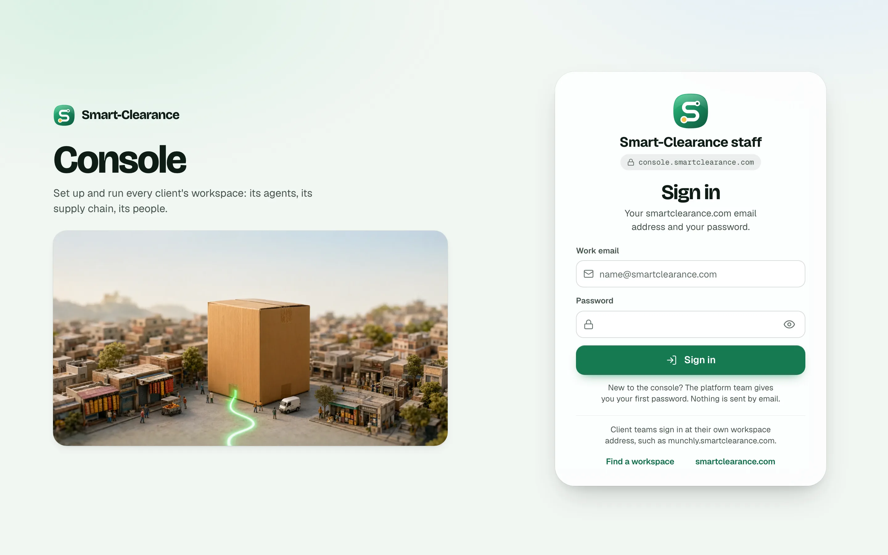
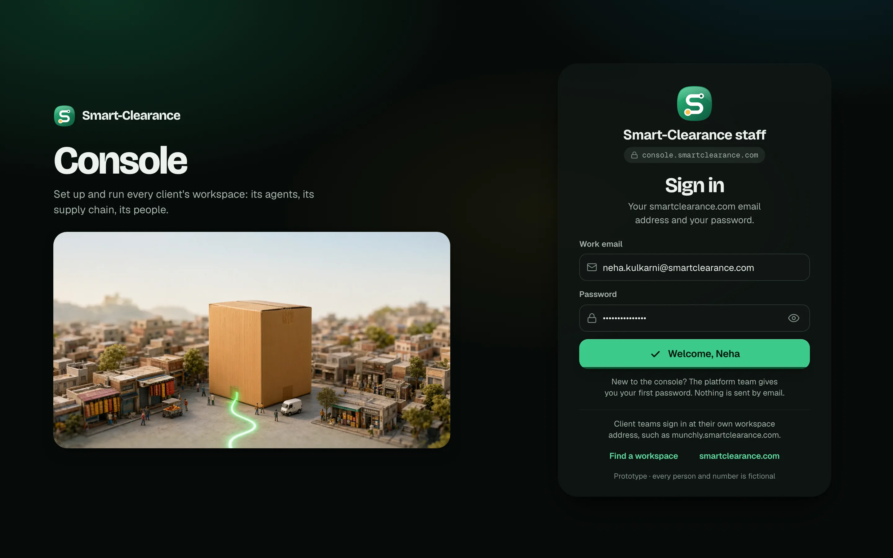
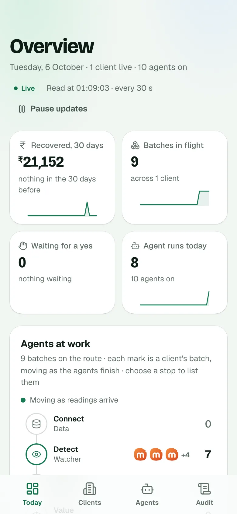
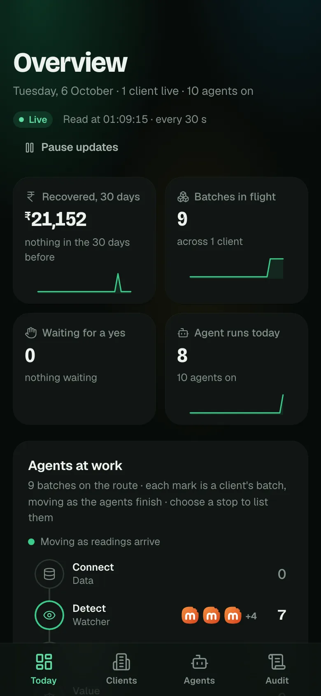
- The first load
- Nothing draws until the session, the platform's config and its catalog have all answered. Measured on 6 Oct against the live API: the page is blank for about 1.5 s with the API warm (the DOM is in at 0.2 s, the sign-in card at 1.5 s), and for several seconds after a quiet spell, since Cloud Run scales to zero.
- Signing in
- The button says "Signing in…", then "Welcome, Neha" with a tick (SC-49), and then holds there while the console's first reads come in: the clients, the dashboard, the batches, the runs. Then the console appears all at once.
- Signing out
- The account sheet closes and the console stays on screen, apparently live, until the platform and Firebase have signed the person out. Then it cuts to the sign-in.
What every option shares
Option A · The shift
RecommendedOne surface for every wait: the mark draws its route as the reads land, the reads are the stops of a short tracker, the console's own signature, and when everything is in the mark flies to where the page keeps it and opens into a window onto the console.
- What it is
- The landing page's loader (SC-35) in the console's words. The mark's S draws with the load and its amber pin lands when everything is in; under it a tracker with one stop per read, each landing with the time it took (Connecting 0.5 s, The platform 1.3 s, The agents 2.2 s), the current stop ringed. The title is the hour's greeting by name when signing in, "Opening the console" on a first load, and "Signing you out" then "Signed out" on the way out.
- Continuity
- Signing in, the card's mark grows into the splash's mark; opening, the splash's mark flies to the sidebar's brand (or the card's mark, going out) and its squircle grows into a window onto the page, which comes into focus as it opens. The page behind stands a touch smaller and out of focus while covered.
- Trade-offs
- A curtain every time, so it must stay short: 0.9 s at the least. The tracker's times put the API's latency on show, which is honest and, on a cold start, a little exposing ("Waking the platform up…" takes over after 2.6 s).
- What the code touches
- design3:
console.jsx(a Stage round the sign-in and the shell, the reads as a flow),console.css. The build:App.svelte(the flow from+layout.ts's loads andrefreshAll), aSplash.svelte, an inline first-load script inapp.htmlhanding over to it, as the landing page does.
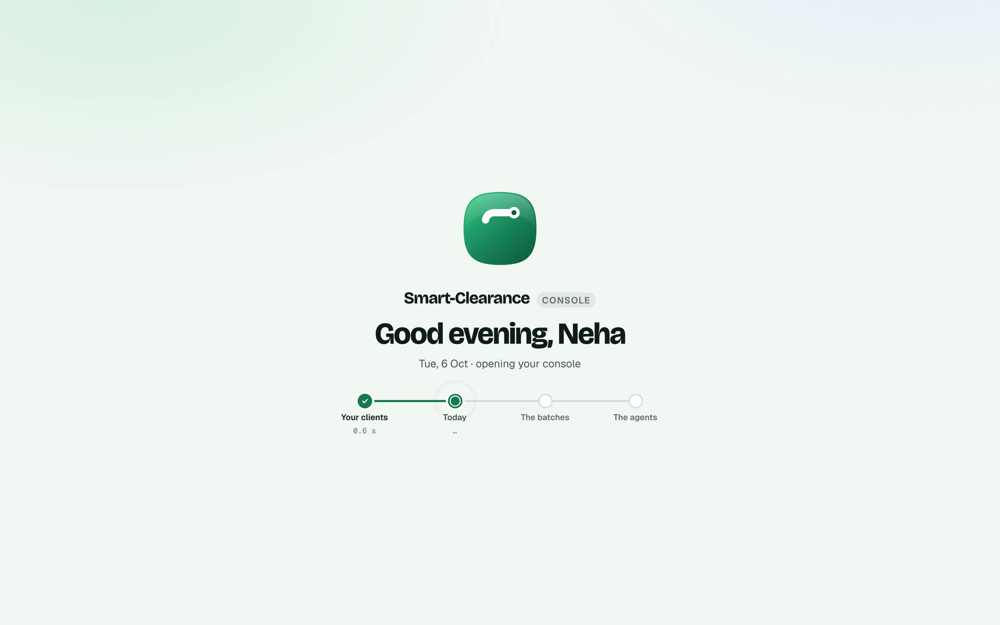
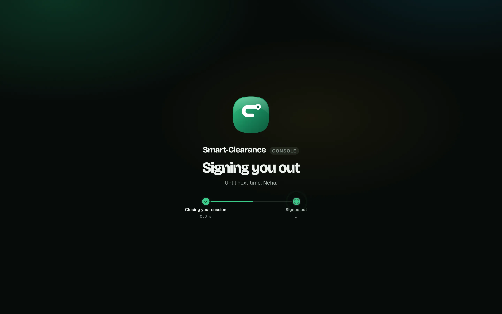
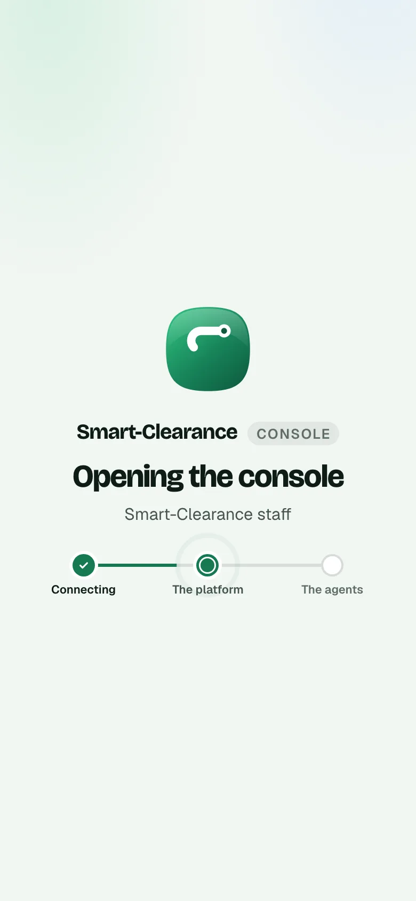
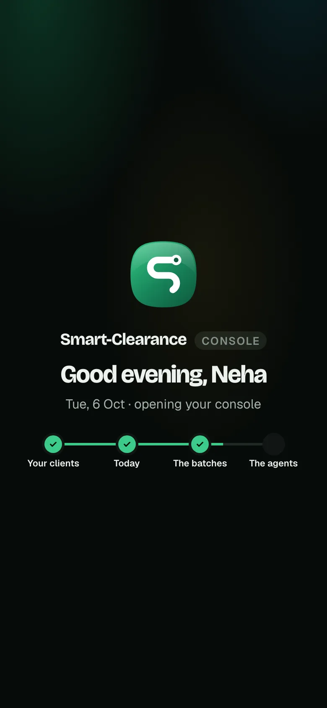
Option B · The handover
No curtain: the console is built in front of you as its reads land. The card's mark travels to the sidebar, the sidebar slides in with its items arriving one by one, and the Overview stands as its shape under the route, each block taking its heading as its read lands, until the content rises into place.
- What it is
- SC-49's loading language, the route and the placeholders in the screen's shape, carried to the whole console. Nothing covers the page: the frame assembles, and each block of the Overview is honest about which read it is waiting for. Signed out, the first load holds the sign-in's form as bones under the route until the platform has answered.
- Continuity
- One mark, travelling: from the card to the sidebar's brand on the way in, and back on the way out (a spring of 220, 26). The sidebar slides in and out; on phones the tab bar rises and sinks instead.
- Trade-offs
- The quietest and the most product-like, and it can't mask a cold start before the app's scripts are in, since there is no frame to assemble yet: the inline first load would have to be a plain route along the top. It needs the most code, and it is the only option whose shape depends on which screen the person lands on (a deep link to a client page has a different shape).
- What the code touches
- design3:
console.jsx(the Stage, the veil's shapes tagged by read),console.css. The build:App.svelte, aHandover.svelteover the shell with the flying mark, SvelteKit'snavigatingand the layout's load for the reads, the inline route inapp.html.
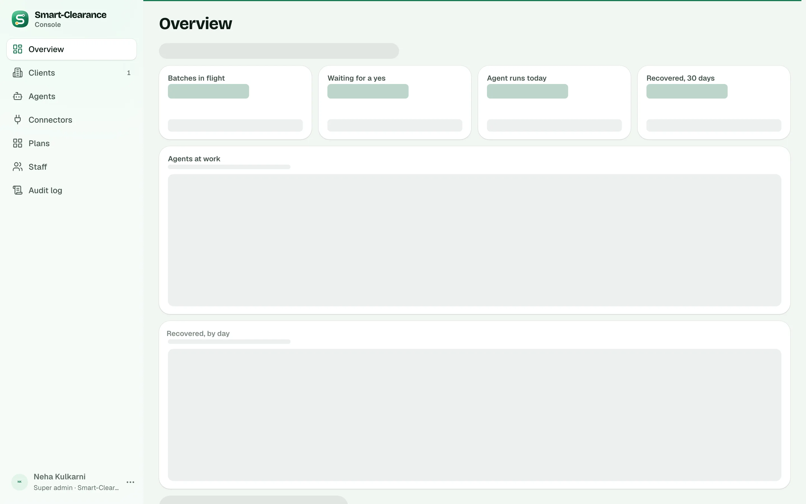
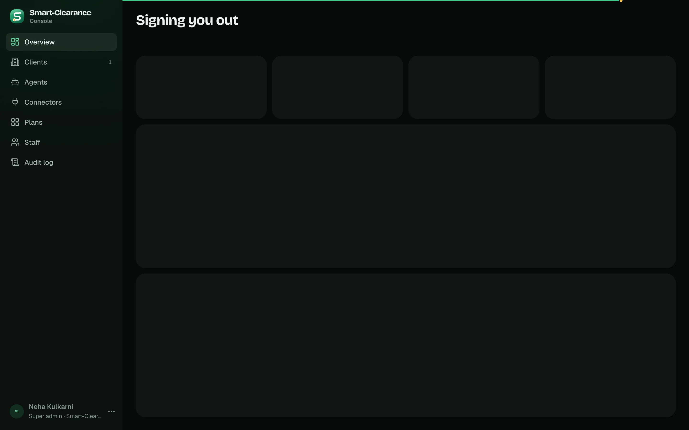
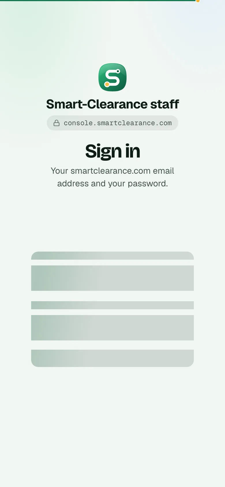
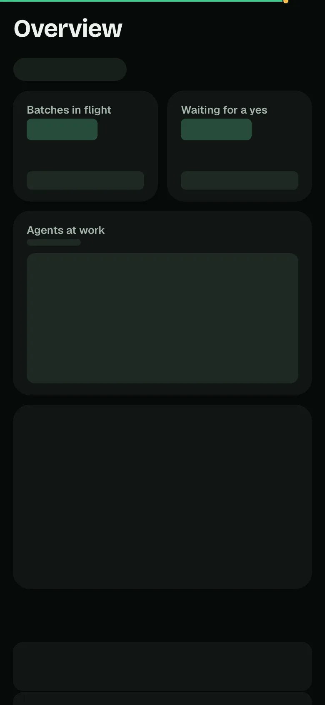
Option C · The roll-call
The console's crew answers the wait: the ten agents and the approval gate stand in a ring round the mark and wake one by one as the reads come in, each saying what it brought, with the handoffs drawing between them. When everyone is at their post the ring opens outward and the console is there.
- What it is
- The console's thesis, the agents at their posts, as the splash. Each agent wakes in the order they work (Data, Watcher, Vision, Valuer, Router, the Approval gate in amber, Lister, Outreach, Negotiator, Paperwork, Impact), paced by the real progress, and the caption says what each brought once its read is in: "Data · 1 client workspace, 1 live", "Watcher · 9 batches in flight", "Approval · nothing waiting for a yes", "Impact · 8 agent runs today". Signing out, nobody stands down: "The agents keep working while you're away, Neha."
- Continuity
- The ring opens outward past the edges (scale 2.6, 700 ms) as the ground clears to the page, which comes into focus underneath. The same from the sign-in and onto it.
- Trade-offs
- The most memorable, and the most to look at every morning: eleven names and a changing caption for a wait of a second or two. The figures depend on which read has landed, so on a slow start the captions are the agents' jobs instead. On phones the ring takes most of the width.
- What the code touches
- design3:
console.jsx(the Stage),console.css; the figures come fromplatform.dashboard. The build:App.svelte, aRollCall.sveltereading the dashboard query as it lands, the inline first load inapp.htmlwith the ring drawn in plain SVG.
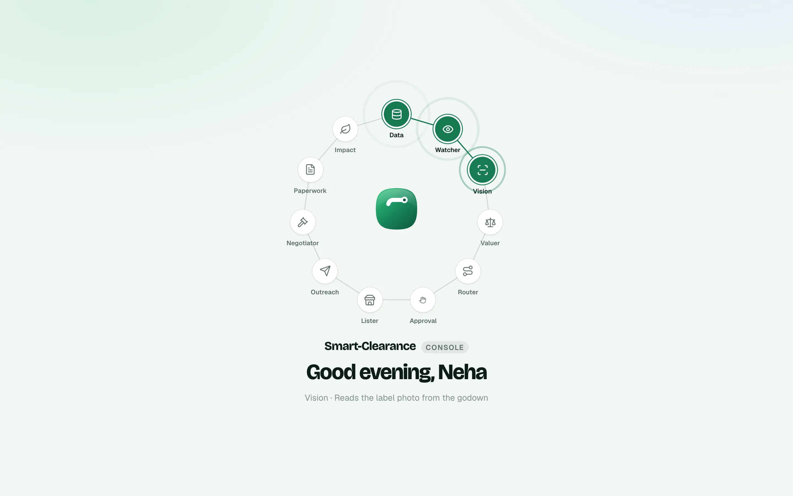
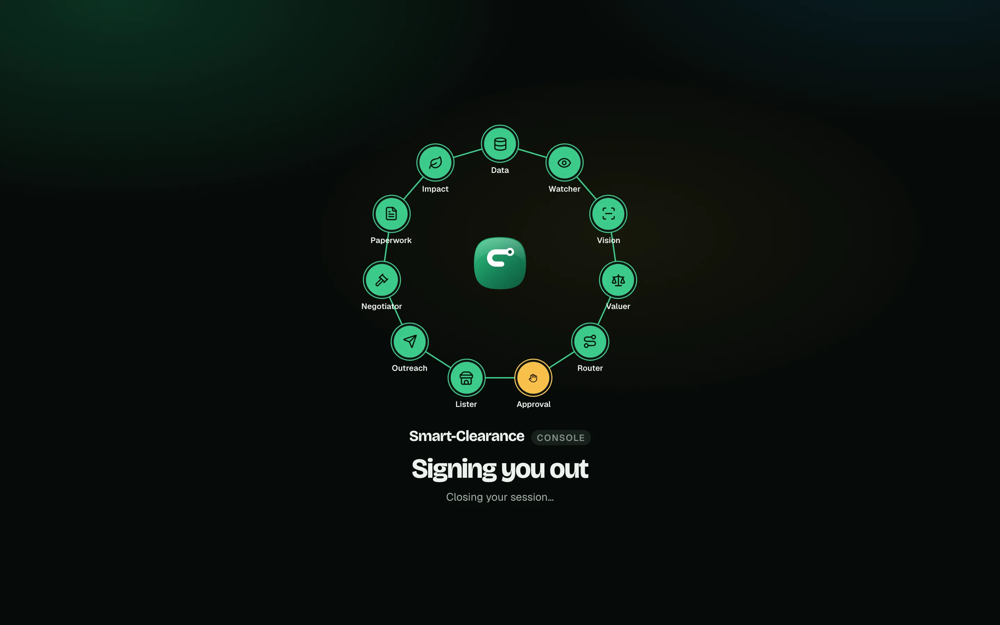
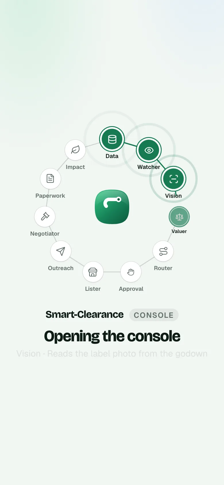
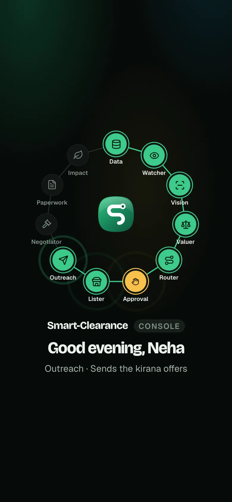
Recommended: A. It answers all three waits with one surface in the platform's own loading language (the landing page's route, the console's tracker), its progress is the real reads, it works the same inline before the app's scripts as inside them, and it is quick enough to meet every morning. C is the one to pick for a demo moment: the agents at their posts are the console's thesis, and the figures as they land are a real pleasure, at the cost of more to read for a wait of a second or two. B is the quietest and the most honest about where the page is waiting, but it cannot hide a cold start and it is the most code.
One question. Should the first load's splash play on every load, or only when the platform is slow to answer (say, over 400 ms)? The landing page plays its loader on every load; a staff tool opened many times a day might rather skip it when the API is warm.